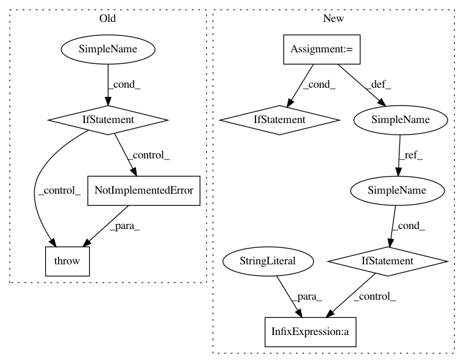

d8f1240c733c32c117b89fc14a6653f93b84f551,coremltools/converters/nnssa/coreml/ssa_converter.py,SSAConverter,_convert_conv2d,#SSAConverter#Any#,1497
Before Change
dilations = node.attr.get("dilations", [1, 1, 1, 1])
// TF uses SpaceToBatch to implement dilated convolutions
if any([df != 1 for df in dilations]):
raise NotImplementedError(
"[SSAConverter] Dilated Convolution not implemented")
assert len(weight.shape) == 4, "Conv2d: weight parameter not rank 4"
data_format = node.attr.get("data_format", "NHWC")
After Change
pad_h = node.attr.get("pad_h", [0, 0])
pad_w = node.attr.get("pad_w", [0, 0])
paddings_before = node.attr.get("_paddings_before", None)
if paddings_before:
layer = builder.add_padding(
name=node.name + "_paddings_before",
left=paddings_before[0],
right=paddings_before[1],
top=paddings_before[2],
bottom=paddings_before[3],
value=0,
input_name=conv_input_name,
output_name=node.name + "_paddings_before"
)
shapes.propagate_single_layer(layer, self.tensor_shapes)
builder.add_convolution(
name=conv_output_name,
kernel_channels=kernel_channels,
output_channels=output_channels,
height=kernel_height,
width=kernel_width,
stride_height=stride_height,
stride_width=stride_width,
border_mode=border_mode,
groups=groups,
W=weight,
b=bias,
has_bias=(bias is not None),
is_deconv=False,
output_shape=None,
input_name=conv_input_name if not paddings_before else node.name + "_paddings_before",
output_name=conv_output_name,
dilation_factors=dilations_factors,
padding_bottom=pad_h[0],
In pattern: SUPERPATTERN
Frequency: 3
Non-data size: 7
Instances
Project Name: apple/coremltools
Commit Name: d8f1240c733c32c117b89fc14a6653f93b84f551
Time: 2019-12-19
Author: yuduo@apple.com
File Name: coremltools/converters/nnssa/coreml/ssa_converter.py
Class Name: SSAConverter
Method Name: _convert_conv2d
Project Name: apple/coremltools
Commit Name: 3e530f0fb84ba99e7cb6e84cc3547f1e1e5f01eb
Time: 2019-09-27
Author: bsonawane@apple.com
File Name: coremltools/converters/nnssa/coreml/ssa_converter.py
Class Name: SSAConverter
Method Name: convert
Project Name: apple/coremltools
Commit Name: 43656e4ec4052c705ac28b675bd151cba0c344a9
Time: 2019-10-04
Author: yuduo@apple.com
File Name: coremltools/converters/nnssa/coreml/ssa_converter.py
Class Name: SSAConverter
Method Name: _convert_batch_to_space_nd
Project Name: apple/coremltools
Commit Name: d8f1240c733c32c117b89fc14a6653f93b84f551
Time: 2019-12-19
Author: yuduo@apple.com
File Name: coremltools/converters/nnssa/coreml/ssa_converter.py
Class Name: SSAConverter
Method Name: _convert_conv2d